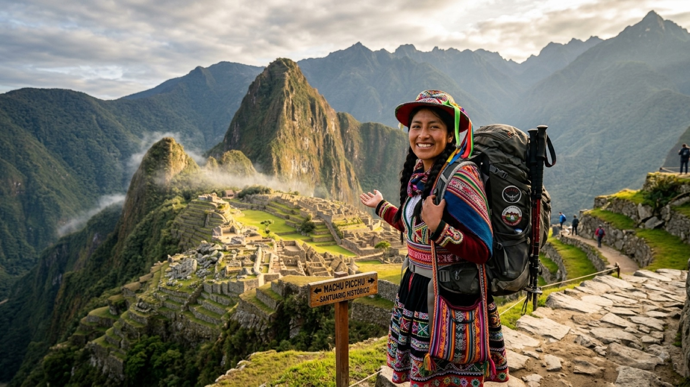

טיול בפרו 2026 — המדריך המלא

פרו היא המדינה שכולם מדברים עליה עוד לפני שהם ממריאים. שלוש יבשות קטנות דחוסות בתוך מדינה אחת: רצועת מדבר צחיחה לאורך האוקיינוס השקט, רכס אנדים שמגיע ל-6,700 מטר ובתוכו שרידי אימפריה שלמה, ומעבר להרים — אגן האמזונס. ובאמצע כל זה, אוכל שכמה מבשלניו נחשבים לטובים בעולם.
בשביל מטיילים ישראלים פרו יושבת בדיוק באמצע הדרך, בשני הכיוונים: בגל העולה היא מגיעה אחרי בוליביה ולפני אקוודור וקולומביה, ובגל היורד היא התחנה שאחרי אקוודור ולפני בוליביה וצ׳ילה. היא כמעט תמיד התחנה המצופה ביותר של הטיול — וגם היחידה שכולם ממליצים להקדיש לה יותר זמן ממה שתכננתם. המדריך הזה מרכז את מה שבאמת צריך לדעת לפניה.
מתי כדאי לנסוע לפרו?
לפרו אין עונה אחת, כי לפרו אין אקלים אחד. השאלה הנכונה היא באיזה אזור אתם מתכננים לבלות את רוב הזמן.
באנדים — העונה היבשה נמשכת בערך ממאי עד ספטמבר, וזו עונת הטרקים המובהקת. שמיים בהירים, שבילים יבשים, ראות מצוינת מהרכסים, ולילות קרים במיוחד: בקוסקו זה אומר טמפרטורות סביב האפס אחרי חשכה. זו גם עונת השיא מבחינת עומס ומחירים; יולי ואוגוסט הם החודשים העמוסים ביותר, ובהם צריך להזמין הכל מראש.
עונת הגשמים באנדים נמשכת בערך מדצמבר עד מרץ. הנוף ירוק בהרבה, האתרים ריקים והמחירים נמוכים, אבל שבילי טרק הופכים לבוציים, מפולות סוגרות כבישים ומסילות מדי פעם, והסיכוי לראות את מאצ׳ו פיצ׳ו בלי ענן על הפנים יורד משמעותית. פרט קריטי לתכנון: מסלול האינקה הקלאסי נסגר לחלוטין בכל חודש פברואר לצורכי תחזוקה ושיקום השביל. מאצ׳ו פיצ׳ו עצמו נשאר פתוח, וגם טרק סלקנטאי ממשיך לפעול, אבל אם פברואר הוא החודש שלכם — מסלול האינקה יורד מהשולחן.
אפריל ואוקטובר הם חודשי המעבר, ורבים חושבים שהם החודשים הטובים ביותר: מזג אוויר סביר ברובו, נוף שעדיין ירוק והרבה פחות אנשים.
החוף והאמזונס משחקים לפי לוח שנה אחר. בחוף הפרואני, כולל לימה, החורף הדרומי (יוני–ספטמבר) הוא דווקא העונה האפורה: שמיכת ערפל נמוכה שהמקומיים קוראים לה גָ׳רוּאָה יושבת על העיר חודשים, כמעט בלי גשם וכמעט בלי שמש. הקיץ הדרומי, דצמבר–מרץ, הוא הזמן שבו לימה והחופים בהירים וחמים. באמזונס חם ולח כל השנה; דצמבר–מאי הם החודשים הגשומים והמוצפים יותר, ואילו יוני–אוקטובר נוחים יותר להליכה ביער אך פחות טובים לשיט בערוצים צרים.
ויזה, כניסה ומעברי גבול
בעלי דרכון ישראלי לא צריכים ויזה מראש לפרו. הכניסה היא בהחתמת דרכון, ומספר הימים נקבע על ידי פקיד הגבול. בפועל התקן הוא 90 יום, אך המסגרת המרבית בחוק מגיעה עד 183 יום בשנה קלנדרית — לפעמים מקבלים אותם בכניסה אחת, ולפעמים מקבלים 30 או 60 יום בלי סיבה ברורה. אם אתם מתכננים שהות ארוכה, בקשו במפורש בגבול לפני ההחתמה, והחזיקו מוכנים כרטיס יציאה מהיבשת או מסלול כתוב. הדרכון צריך להיות בתוקף לפחות שישה חודשים, וכדאי לוודא שההחתמה שקיבלתם נכונה לפני שאתם מתרחקים מהדלפק.
מעברי הגבול היבשתיים המרכזיים:
- לבוליביה: קופקבנה–יונגויו (Kasani), על שפת אגם טיטיקקה — הכי יפה והכי נוח, נסיעה ישירה פונו–קופקבנה בכמה שעות. חלופה מהירה יותר לכיוון לה פאס היא דסאגוודרו (Desaguadero), עמוס יותר ופחות נעים.
- לאקוודור: וואקיז׳אס (Huaquillas) בחוף, בדרך לגואיאקיל או למנקורה, מעבר סואן שבו כדאי לנסוע באוטובוס בינלאומי שעוצר בשני הצדדים; ומקארה (Macará) הפנימי, בדרך ללוחה וקוואנקה — שקט, יפה ומומלץ בהרבה.
- לצ׳ילה: טקנה–אריקה, אחד המעברים הפשוטים ביבשת. הקולקטיבו המשותף בין שתי הערים לוקח כשעה וחצי, והנהג מטפל בניירת מולכם.
כמה עולה טיול בפרו?
פרו זולה משמעותית מצ׳ילה או מארגנטינה, יקרה מעט מבוליביה, ובגדול קלה מאוד לתקציב — עד הרגע שבו מתחילים לשלם על מאצ׳ו פיצ׳ו. המטבע הוא סול (Sol, PEN), ושער החליפין נע סביב 3.7 סול לדולר.
| הוצאה | מחיר משוער |
|---|---|
| מיטה בחדר משותף בהוסטל | 8–15$ (30–55 סול) |
| חדר פרטי בסיסי | 20–35$ |
| מֶנוּ דֶל דִיאָה (מנת צהריים מקומית) | 2–5$ (8–20 סול) |
| ארוחה במסעדה טובה / סביצ׳ה | 8–20$ |
| אוטובוס לילה בחברה טובה (8–12 שעות) | 20–45$ |
| טיסת פנים לימה–קוסקו | 40–100$ |
| כרטיס כניסה למאצ׳ו פיצ׳ו | 45–60$ (לפי מסלול ושעה) |
| רכבת אולנטייטמבו–אגואס קליינטס (הלוך-חזור) | 60–140$ |
| אוטובוס מאגואס קליינטס לשער האתר (הלוך-חזור) | כ-24$ |
| טרק סלקנטאי מאורגן (4–5 ימים) | 250–400$ |
| מסלול האינקה מאורגן (4 ימים) | 700–1,000$ |
| יום טיול מקוסקו (ההר הצבעוני / העמק הקדוש) | 25–60$ |
| קניון קולקה מארקיפה (יומיים) | 60–100$ |
מאצ׳ו פיצ׳ו ראוי להסבר נפרד, כי כאן מתנפצים רוב התקציבים. הכניסה עצמה לא נוראית — בסביבות 45 עד 60 דולר, תלוי באיזה מסלול פנימי בחרתם ואם הוספתם טיפוס להואינה פיצ׳ו. הבעיה היא כל מה שסביבה. אין כביש לאגואס קליינטס, העיירה שלמרגלות האתר, ולכן ההגעה היא ברכבת — וזו אחת הרכבות היקרות ביותר בעולם ליחידת מרחק, 60 עד 140 דולר הלוך-חזור מאולנטייטמבו לפי שעה וסוג קרון. משם צריך את האוטובוס שמטפס לשער (כ-24 דולר הלוך-חזור, או שעה וחצי של מדרגות ברגל), לילה באגואס קליינטס, ולרוב גם מדריך. בשורה התחתונה, ביקור במאצ׳ו פיצ׳ו מסתכם כמעט תמיד ב-200 עד 400 דולר לאדם, ולא בכרטיס של 50 דולר כפי שרובם מניחים. זה לא סיבה לוותר — זו סיבה לתכנן.
שורה תחתונה: מטייל תרמילאי סביר מוציא בפרו 30–40 דולר ביום על לינה, אוכל ותחבורה, בלי הפריטים הגדולים. שלושה שבועות בפרו הכוללים את מאצ׳ו פיצ׳ו, טרק אחד וכמה ימי טיול יסתכמו בסביבות 1,400 עד 1,900 דולר לאדם.
איך מתניידים בפרו?
פרו גדולה מכפי שהמפה מרמזת, והמרחקים בין התחנות המרכזיות נמדדים בלילות שלמים על הכביש. הבשורה הטובה היא שיש בה כמה מרשתות האוטובוסים הטובות ביבשת.
אוטובוסים בין-עירוניים. ההבדל בין החברות בפרו הוא לא ניואנס. Cruz del Sur, Oltursa, Movil Tours ו-Excluciva מפעילות אוטובוסים דו-קומתיים עם מושבי קמה בזווית 160 או 180 מעלות, שני נהגים בתורנות, ניטור מהירות ובידוק מזוודות. בקצה השני יש חברות מקומיות זולות שנוסעות מהר מדי בכבישי הרים, בלי בקרה ובלי אחריות. ההפרש במחיר הוא לרוב עשרה עד עשרים דולר בכיוון — וזה ההפרש הכי משתלם שתשלמו בפרו כולה, במיוחד בכביש ההררי לקוסקו או לוארז.
אוטובוסי לילה הם דרך החיים כאן: הם חוסכים לילה בהוסטל ומגיעים לבוקר. אל תיסעו בהם בכביש הררי טכני עם חברה זולה, שמרו את הציוד היקר בתיק היד ולא בבטן האוטובוס, ואל תניחו שמזגן פירושו נעים — קחו שכבה חמה.
טיסות פנים הגיוניות במרחקים הגדולים. לימה–קוסקו היא שעה וחצי באוויר לעומת 20 עד 22 שעות באוטובוס, ולעיתים קרובות המחיר דומה. לימה–אריקיפה, לימה–איקיטוס (שאין אליה כביש כלל) ולימה–פוארטו מלדונדו הן קווים דומים. LATAM, Sky ו-JetSmart מתחרות ביניהן; שימו לב שהחברות הזולות מתמחרות כבודה בנפרד, ושטיסה ישירה מלימה לקוסקו מקפיצה אתכם מגובה פני הים ל-3,400 מטר בשעה וחצי — ראו את פרק הגובה בהמשך.
הרכבת לאגואס קליינטס היא המקטע היחיד בפרו שחייבים לנסוע בו ברכבת. שתי חברות מפעילות אותו, PeruRail ו-IncaRail, ורוב המטיילים עולים באולנטייטמבו שבעמק הקדוש ולא בקוסקו עצמה — קצר יותר וזול יותר. הכרטיסים בשעות הנוחות נגמרים ראשונים.
המסלול המומלץ — שלושה שבועות בפרו
המסלול בנוי מלימה דרומה ואז צפונה אל קוסקו, כך שהגובה עולה בהדרגה במקום בבת אחת. הוא עובד מצוין גם הפוך, למי שמגיע מבוליביה דרך טיטיקקה:
- ימים 1–2 · לימה — נחיתה, התאוששות מהג׳ט לג ואכילה רצינית. מירפלורס וברנקו הם השכונות שבהן תישנו; המרכז ההיסטורי שווה חצי יום.
- ימים 3–4 · פאראקאס והואקצ׳ינה — שיט אל איי בז׳סטס (אריות ים, פינגווינים ופליקנים), ואז נווה המדבר הואקצ׳ינה: באגי בדיונות וסנדבורד בשקיעה. תחנה קצרה, מהנה, ולא רצינית במיוחד — וזו בדיוק הנקודה.
- יום 5 · נאסקה — טיסה קטנה מעל קווי נאסקה, כשלושים דקות של סיבובים חדים מעל דמויות ענק שנחרטו במדבר לפני אלפיים שנה. מי שסובל ממחלת תנועה יסבול; מי שמוותר יכול להסתפק במגדל התצפית שליד הכביש.
- ימים 6–9 · ארקיפה וקניון קולקה — העיר הלבנה, בנויה מאבן געשית בהירה למרגלות הר הגעש מיסטי, ולדעת רבים העיר היפה בפרו. משם יציאה של יומיים לקניון קולקה, אחד העמוקים בעולם, שבו קונדורים גולשים על זרמי הבוקר מול נקודת התצפית. ארקיפה יושבת על כ-2,300 מטר, וזה בדיוק שלב הביניים הנכון לפני האנדים הגבוהים.
- ימים 10–12 · פונו ואגם טיטיקקה — האגם השיט הגבוה בעולם, כ-3,800 מטר. יום או יומיים בין האיים הצפים של אורוס, אמנטני וטקילה, רצוי עם לינה אצל משפחה מקומית. פונו עצמה אינה יפה; האגם מפצה.
- ימים 13–16 · קוסקו והעמק הקדוש — הלב. קוסקו היא בירת האינקה לשעבר, עיר של חצרות קולוניאליות שנבנו על גבי חומות אינקה מושלמות, והיא גם המחנה הראשי של כל מטייל בפרו. שני הימים הראשונים הם ימי התאקלמות. משם יוצאים לעמק הקדוש: פיסאק, אולנטייטמבו, מוראי ומכרות המלח של מארס.
- ימים 17–20 · טרק ומאצ׳ו פיצ׳ו — טרק סלקנטאי לחמישה ימים או מסלול האינקה לארבעה, שניהם מסתיימים במאצ׳ו פיצ׳ו. מי שלא רוצה לצעוד, מגיע ברכבת ליום אחד מלא באתר.
- יום 21 · חזרה ללימה — או המשך צפונה ומזרחה, תלוי בכיוון הטיול.
יש עוד שבוע? שלוש תוספות מצוינות. הוארז היא הבחירה למי שבא לצעוד באמת: היא בסיס לקורדילרה בלנקה, לטרק סנטה קרוז לארבעה ימים ולמעגל הוואיוואש התובעני לשמונה עד עשרה ימים, ורבים חושבים שאלה הנופים ההרריים החזקים ביבשת. האמזונס נגיש משתי נקודות: פוארטו מלדונדו קרובה לקוסקו וזולה יותר, ואיקיטוס עמוקה ואותנטית יותר אך מחייבת טיסה. וההר הצבעוני (ויניקונקה) הוא יום טיול קלאסי מקוסקו, בתנאי שאתם כבר מאוקלמים — הוא מגיע לכ-5,000 מטר, וזה יותר גבוה ממה שרוב האנשים מבינים כשהם קונים את הסיור.
מה חובה לראות בפרו?
חמש החוויות שסביבן נבנה כמעט כל מסלול:
- מאצ׳ו פיצ׳ו — ואין מה לעשות עם זה: גם אחרי אלף תצלומים, הרגע שבו הערפל נפתח והעיר מופיעה על הרכס עומד בציפיות. הגיעו מוקדם, קחו מדריך לשעה הראשונה, ואל תדחסו אותה ליום שבו אתם גם נוסעים.
- קוסקו והעמק הקדוש — לא תחנת מעבר בדרך לאתר אלא יעד בפני עצמו: אדריכלות אינקה שלא נכנעה לרעידות אדמה, שווקים, ובעמק אתרים שבחלקם כמעט ריקים מאנשים.
- טרק אמיתי באנדים — סלקנטאי דרך מעבר של כ-4,600 מטר, מסלול האינקה על אבניו המקוריות, או טרק סנטה קרוז מהוארז. פרו היא אחת ממדינות ההליכה הגדולות בעולם, ומי שמסתפק ברכבת מפספס את זה לגמרי.
- אגם טיטיקקה — לינה אצל משפחה על אחד האיים, ערב שקט בגובה 3,800 מטר עם יותר כוכבים ממה שראיתם, ובוקר שמזכיר שהאגם הזה הוא עדיין בית ולא תפאורה.
- האוכל של לימה — פרו היא יעד קולינרי עולמי, בלי הגזמה: כמה ממסעדות לימה מדורגות באופן קבוע בין הטובות בעולם, ובראשן סנטרל ומאידו. אבל האמת של הכתבה הזו היא שסביצ׳ה ב-8 דולר בסביצ׳ריה שכונתית, לומו סלטדו במנו דל דיה ואנטיקוצ׳וס מדוכן רחוב בערב יעשו את העבודה בדיוק באותה מידה.
מחלת גבהים ובטיחות בפרו
אם יש נושא בריאותי אחד שכדאי להבין לפני פרו, זה הגובה. קוסקו יושבת על כ-3,400 מטר, פונו ואגם טיטיקקה על כ-3,800, ההר הצבעוני מגיע לכ-5,000 ומעברי הטרקים עוברים את 4,500. טיסה מלימה לקוסקו מעלה אתכם מגובה פני הים לגובה הזה בשעה וחצי — קפיצה שהגוף לא בנוי אליה. מחלת גבהים, סורוצ׳ה בשפה המקומית, לא קשורה לכושר, לגיל או לניסיון. ספורטאים חוטפים אותה בדיוק כמו כולם, ולפעמים דווקא הם, כי הם מנסים ללכת מהר מדי ביום הראשון.
התאקלמות. הכלל הפשוט: שני ימים ראשונים איטיים, ואז הכל נפתח. בלי טרקים, בלי גבהים נוספים, בלי אלכוהול, הרבה מים, ארוחות קטנות ופחמימתיות, ושינה מוקדמת. אל תקבעו את ההר הצבעוני או את תחילת הטרק ליומיים הראשונים בקוסקו — זו הטעות הכי נפוצה בפרו. אם אתם מגיעים מבוליביה, מלה פאס או מטיטיקקה, אתם כבר מאוקלמים ואפשר לוותר על השלב הזה. אם אתם מגיעים מלימה, שקלו לעצור בארקיפה על 2,300 מטר בדרך, או להתחיל דווקא בעמק הקדוש, שנמוך בכ-600 מטר מקוסקו ומהווה מקום התאקלמות טוב יותר מהעיר.
תסמינים. כאב ראש, בחילה, עייפות, קוצר נשימה במאמץ קל ושינה קטועה הם התגובה הרגילה של הגוף, והם חולפים תוך יום או יומיים. עלי קוקה ותה קוקה — שמוגשים בכל הוסטל בקוסקו — מקלים על התסמינים הקלים, וכך גם כדורי סורוצ׳י שנמכרים בכל בית מרקחת. יש מי שנוטל אצטזולמיד (דיאמוקס) החל מיום לפני העלייה, אבל זו תרופת מרשם שדורשת התייעצות עם רופא לפני היציאה מהארץ.
מתי יורדים. יש סימנים שאינם חלק מהתהליך הרגיל ומחייבים ירידה מיידית לגובה נמוך יותר, בלי לחכות לבוקר: בלבול או התנהגות מוזרה, אובדן שיווי משקל והליכה לא יציבה, קוצר נשימה גם במנוחה, שיעול מתמשך עם ליחה, או כאב ראש שלא מגיב למשככים. ירידה של 500 עד 1,000 מטר משנה את התמונה מהר. אל תמשיכו לעלות עם תסמינים, ואל תיתנו למישהו בקבוצה לעשות זאת — חברות טרק רציניות נושאות חמצן ומכשיר קשר, וזה שיקול אמיתי בבחירת מפעיל.
בטיחות שוטפת. מסלול התרמילאים בפרו הוא מהסלולים ביבשת, ורוב הביקורים עוברים בלי תקרית. הכללים שכן שווים הקפדה:
- בלימה — לישון ולהסתובב במירפלורס, ברנקו וסן איסידרו. המרכז ההיסטורי בסדר ביום ופחות בלילה; מאזורים כמו לה ויקטוריה וקאיאו כדאי פשוט להתרחק.
- מוניות — להזמין באפליקציה (Uber, Cabify, InDriver) ולא לעצור ברחוב, במיוחד לא בלימה ולא בלילה.
- אוטובוסי לילה — לבחור חברה טובה, לשמור מסמכים, כסף וטלפון על הגוף, ולא בתא העליון או בבטן.
- הונאות נפוצות — שטרות מזויפים כעודף (בדקו שהשטר לא חלק מדי ושהחוט משתנה בזווית), כספומטים עם קורא כרטיסים בכניסות חנויות, ומחירי מונית שמוכפלים כשמזהים תייר. משכו כסף מכספומט בתוך בנק.
- הפגנות וחסימות כבישים הן חלק מהחיים הפוליטיים בפרו ומשבשות מדי פעם קווי אוטובוס באזור קוסקו ופונו. בדקו מצב לפני נסיעה ארוכה והשאירו מרווח לפני טיסה בינלאומית.
- מים — רק מבקבוק או מסונן, בכל מקום בפרו.
שאלות נפוצות
מתי צריך להזמין את מאצ׳ו פיצ׳ו ואת מסלול האינקה?
מסלול האינקה הקלאסי מוגבל למספר קבוע של אנשים ביום, ומכיוון שהמכסה כוללת גם את הסבלים והמדריכים, נותרים בפועל מעט מאוד מקומות למטיילים. התאריכים נפתחים בסוף השנה הקודמת ונחטפים תוך שבועות. אם אתם רוצים את מסלול האינקה בעונה היבשה, הזמינו ארבעה עד שישה חודשים מראש — ואל תשכחו שבפברואר הוא סגור לגמרי. כרטיס הכניסה למאצ׳ו פיצ׳ו עצמו נמכר לפי מכסה יומית ולפי שעת כניסה, ובעונה היבשה כדאי לסגור אותו לפחות חודש מראש. טרק סלקנטאי הוא האלטרנטיבה המקובלת: הוא לא דורש היתר, אפשר לסגור אותו בקוסקו כמה ימים מראש, הוא זול בהרבה, והנוף שלו — מעבר של כ-4,600 מטר מתחת לקרחון סלקנטאי ואז ירידה אל יער ענן — לא נופל ממסלול האינקה.
כמה ימים צריך לפרו?
שבועיים הם המינימום כדי לעשות את קוסקו, העמק הקדוש ומאצ׳ו פיצ׳ו בלי לחטוף גובה, ולהוסיף אזור אחד נוסף. שלושה שבועות הם המספר הנכון: הם מאפשרים גם את הדרום המדברי, ארקיפה וקניון קולקה, אגם טיטיקקה, וטרק אמיתי. חודש מאפשר להוסיף את הוארז לטרקים הרציניים או כמה ימים באמזונס. בפועל, פרו היא המדינה שבה כמעט כולם מאריכים.
האם אפשר להגיע למאצ׳ו פיצ׳ו בלי לשלם על הרכבת?
כן, בשתי דרכים. הראשונה היא כל טרק שמסתיים באתר — סלקנטאי, לארס או מסלול האינקה — שבו ההגעה היא ברגל וההזמנה כוללת לרוב רק כרטיס רכבת בכיוון החזרה. השנייה היא המסלול היבשתי דרך הידרואלקטריקה: אוטובוס מקוסקו לתחנת הכוח, ומשם הליכה של כשלוש שעות לאורך המסילה עד אגואס קליינטס. זה יום ארוך ומתיש שחוסך כמאה דולר לאדם, והוא חסום לעיתים בעונת הגשמים בגלל מפולות. את כרטיס הכניסה לאתר עצמו אי אפשר לעקוף בשום דרך.
מה עם מזומן, כרטיסי אשראי וסים?
בערים ובעסקים תיירותיים כרטיס אשראי עובד בלי בעיה, אך פרו עדיין רצה על מזומן: בשווקים, במנו דל דיה, בקולקטיבו, בכפרי טיטיקקה ובכניסה לאתרים קטנים צריך סולים. כספומטים זמינים בכל עיר, אך גובים עמלה קבועה גבוהה יחסית — משכו סכומים גדולים בפעם, מתוך בנק ולא ממכונה ברחוב. כרטיס סים מקומי (Claro או Movistar) עולה כמה דולרים והכיסוי במסלול המרכזי טוב מאוד, כולל בקוסקו ובעמק הקדוש; בטרקים, בקניון קולקה ובאמזונס אין קליטה ואין מה לצפות לה. eSIM אזורי הוא חלופה נוחה למי שעובר כמה מדינות ברצף.
האם ישראלים צריכים ויזה לפרו?
לא. בעלי דרכון ישראלי נכנסים לפרו ללא ויזה מראש. פקיד הגבול קובע את מספר הימים ומחתים אותו בדרכון, ובדרך כלל מדובר ב-90 יום, אם כי המסגרת המרבית מגיעה ל-183 יום בשנה קלנדרית. אין הבטחה שתקבלו את המקסימום, ולכן אם אתם מתכננים שהות ארוכה כדאי לבקש זאת מפורשות בגבול ולהראות כרטיס יציאה או מסלול. הדרכון צריך להיות בתוקף לפחות שישה חודשים.
כמה עולה טיול בפרו ליום?
מטייל תרמילאי מוציא בפרו בערך 30 עד 40 דולר ביום על לינה, אוכל ותחבורה: מיטה בהוסטל 8 עד 15 דולר, מנו דל דיה מקומי 2 עד 5 דולר, ואוטובוס לילה בחברה טובה 20 עד 45 דולר. הסכום הזה לא כולל את הפריטים הגדולים. מאצ׳ו פיצ׳ו על כל מרכיביו מסתכם בדרך כלל ב-200 עד 400 דולר, טרק מאורגן ב-250 עד 400 דולר, ומסלול האינקה ב-700 עד 1,000 דולר. שלושה שבועות בפרו עם מאצ׳ו פיצ׳ו וטרק אחד יסתכמו בסביבות 1,400 עד 1,900 דולר לאדם.
איך מתמודדים עם מחלת גבהים בקוסקו?
קוסקו יושבת על כ-3,400 מטר ופונו על כ-3,800, וטיסה ישירה מלימה מקפיצה אתכם לשם בשעה וחצי. הכלל החשוב הוא לתת ליומיים הראשונים להיות איטיים: בלי טרקים, בלי אלכוהול, הרבה מים, ארוחות קלות ושינה מוקדמת. עלי קוקה ותה קוקה מקלים על התסמינים הקלים, ויש מי שנוטל אצטזולמיד בהתייעצות עם רופא. כאב ראש, בחילה וקוצר נשימה קל הם נורמליים; בלבול, קוצר נשימה במנוחה, הליכה לא יציבה או שיעול עם ליחה מחייבים ירידה מיידית לגובה נמוך יותר וטיפול רפואי. אם אתם מגיעים מבוליביה אתם כבר מאוקלמים; אם אתם מגיעים מלימה, שקלו לעצור בארקיפה על 2,300 מטר בדרך.
לפרו באים בשביל מאצ׳ו פיצ׳ו, ונשארים בגלל כל השאר. תנו לה שלושה שבועות, ותנו לגוף שלכם יומיים.